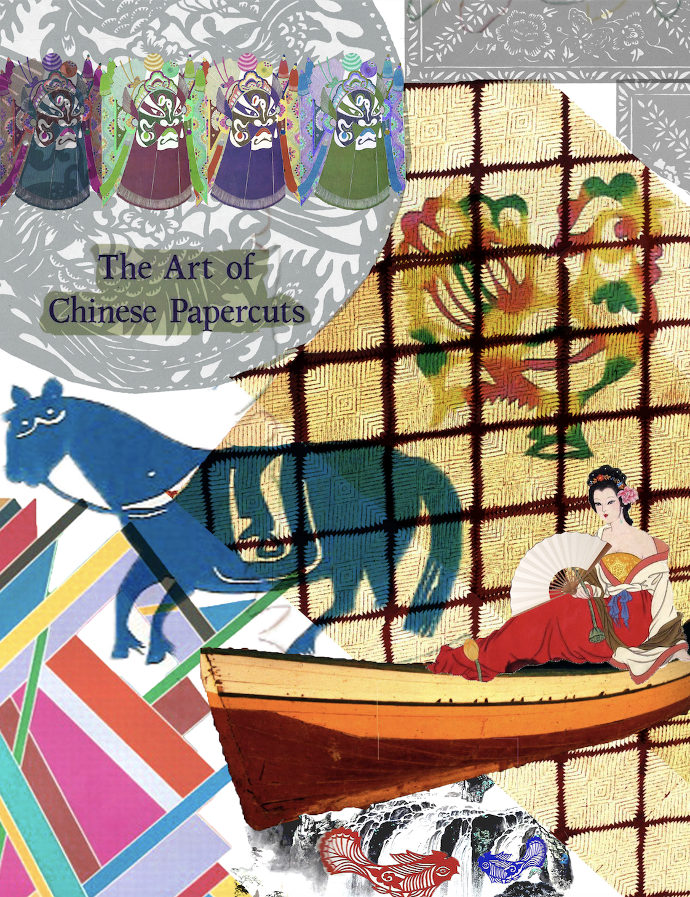
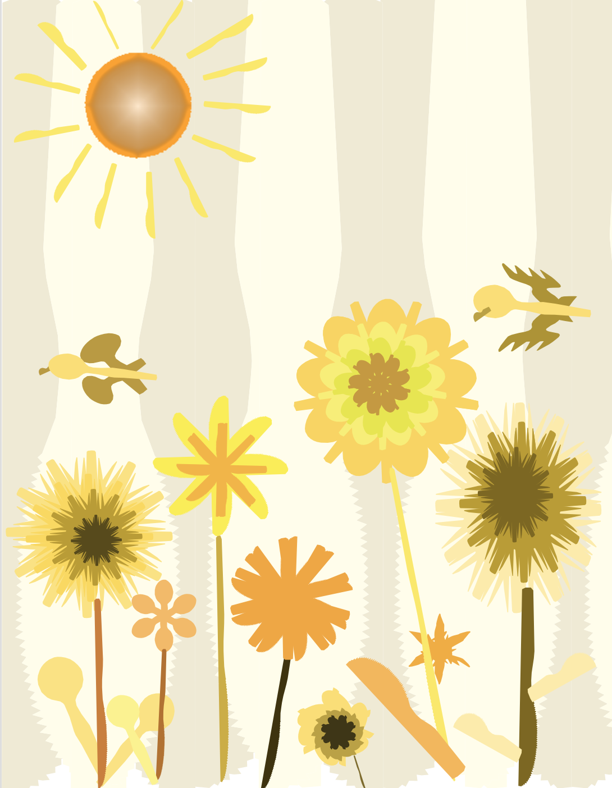
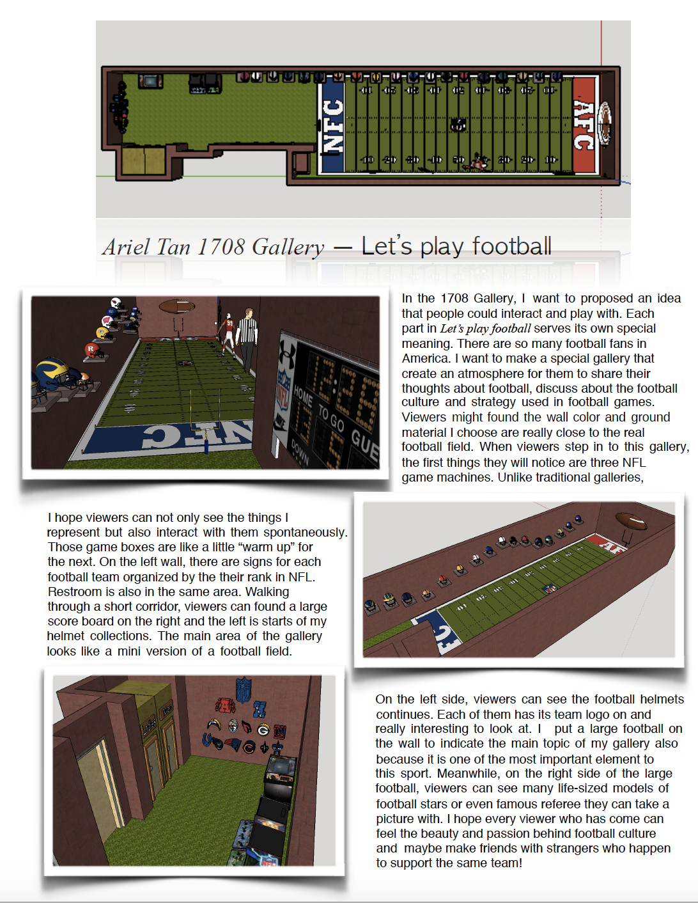

My works
One question we need to think about every single day is what to wear. Some people might ask "Is it important to wear new clothes every single day?" My answer would be "No". As long as your outfit shows your style, who you are or you feel comfortable with it, that's enough :)

Sweatshirt plus jean could be one of my favourite style. Sweatshirts can come with many different shapes and colors. I bought a lot of black and white sweatshirts with simple cartoon or pictures on them. One of my favourite brand is Moschino. It sells really really cool sweatshirts, but usually a little bit expansive. Therefore I usually wait until Thanks giving, at that time you can get 50 % off. For Jeans, I really recommend Gap and Levi's, comfortable to wear and also look great:) When I get nothing to do, I enjoy just watching those brands' websites to see their design and creativity behind.

Sweatshirt plus jean could be one of my favourite style. Sweatshirts can come with many different shapes and colors. I bought a lot of black and white sweatshirts with simple cartoon or pictures on them. One of my favourite brand is Moschino. It sells really really cool sweatshirts, but usually a little bit expansive. Therefore I usually wait until Thanks giving, at that time you can get 50 % off. For Jeans, I really recommend Gap and Levi's, comfortable to wear and also look great:) When I get nothing to do, I enjoy just watching those brands' websites to see their design and creativity behind.

2016 Ariel. Don't steal.
Sweatshirt plus jean could be one of my favourite style. Sweatshirts can come with many different shapes and colors. I bought a lot of black and white sweatshirts with simple cartoon or pictures on them. One of my favourite brand is Moschino. It sells really really cool sweatshirts, but usually a little bit expansive. Therefore I usually wait until Thanks giving, at that time you can get 50 % off. For Jeans, I really recommend Gap and Levi's, comfortable to wear and also look great:) When I get nothing to do, I enjoy just watching those brands' websites to see their design and creativity behind.

2016 Ariel. Don't steal.